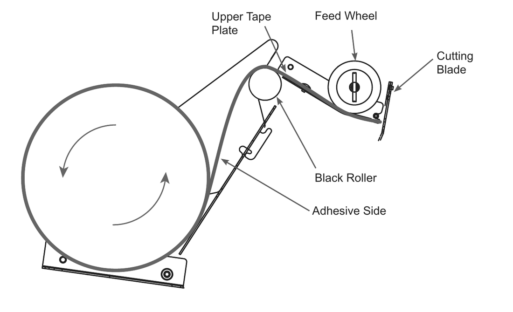

Running the BP555
Operator training for the Better Pack 555e gummed tape dispenser. Set it up, use every button, program Automatic Mode and seal a carton properly.
Supplied by Cotswold Packaging Group
Based on the Better Packages 555e User Manual, Rev 3.1

Get ready 1: fill the water bottle

Manual, Figure 21.
- Unscrew the cap and fill the 1.8 litre bottle with room-temperature tap water.
- Screw the cap back on tightly. The membrane in the cap seals the bottle.
- Put the bottle on its shelf with the indent under the water bottle retainer.
- Check the cap sits around the post in the water tank. Water flows in and stops by itself once it reaches the cap.
No special water needed. If your site has hard water, use filtered water to make the brush and cap seal last longer.
Get ready 2: brush and water level

Manual, Figure 19.
- Turn the brush so the shortest bristles face the machine.
- Drop it into the opening against the retaining bracket and press down until the bracket grips it.
- Check the bristles lie flat across the top of the tank.
- Slide the tank in under the heater until it locks onto the shelf.
- Set the Water Level Slider: towards the machine for more water, away for less.
Hot heater. The underside of the heater gets hot. Lift it only by the grip tabs on each side.
Get ready 3: load the tape

eS eSA eL eFA eFACM eJ eJA Gum side in

eM eMA Gum side out
- Open the lid and cut the tape end square with scissors.
- Stand the roll upright. The end comes from under the roll: over the back for gum side in, up the front for gum side out.
- Feed it over the rollers, under the upper tape plate and feed wheel, up to the blade. Close the lid.
Switch on and set the heat

Manual, Figure 23.
- Flip the Main Power Switch to I.
- Wait for the beep. That means the machine has started up and is ready.
- Turn the Heater Control Dial from OFF towards MAX. It has five dots in between. It leaves the factory set to OFF.
In a heated or climate-controlled building you will not need more than halfway. Keeping it lower makes the heater last longer.
Allow at least 30 minutes for the heater to cool before you touch its underside.